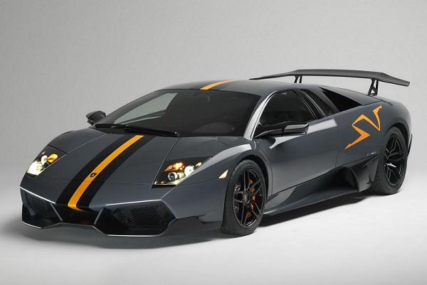
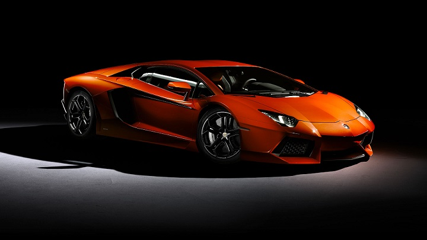
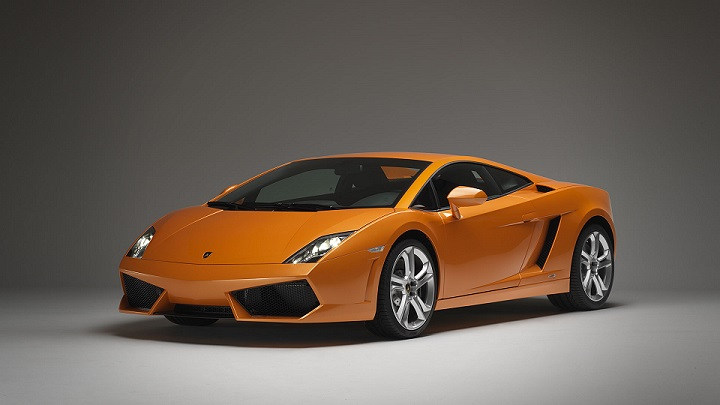

Mi web será las más molona
El objetivo de mi página web es enseñar como dejarnos la pasta de una manera elegante. Así que ya sabes:
Automobili Lamborghini Holding S.p.A., comúnmente conocido como Lamborghini (pronunciado [lamboɾˈɡiːni] en italiano y [lamboɾˈɡini] en castellano, usualmente [lamboɾˈʝini] en España), es un fabricante italiano de automóviles deportivos fundado en 1963 por el fabricante de tractores Ferruccio Lamborghini cuyos nombres de autos hacen referencia a nombres de toros de lidia famosos. (1997-actualidad). Ferruccio se instaló en Sant'Agata Bolognese, en Bolonia, a pocos kilómetros de Maranello, para rivalizar con su vecino, Enzo Ferrari, a raíz de una pelea por la calidad de sus coches.[cita requerida] La empresa original se llamaba Automobili Ferruccio Lamborghini SpA, que derivaba a su vez de la Lamborghini Trattori S.A..
Desde los primeros coupés deportivos hasta los actuales "Reventón", "Aventador" y "Gallardo", los Lamborghini siempre se han destacado por sus prestaciones y sus diseños exóticos.
El listado de vehículos disponibles para dejarnos el parné son los siguientes:

Construido en Italia. Recién llegado desde el futuro. Lamborghini tiene una historia del pensamiento revolucionario. Ya sea en términos de diseño, como lo fueron las puertas de tijera emblemáticas.
O en términos de tecnología como el motor V12 y la tecnología de fibra de carbono. Yendo mucho más allá de lo que se pensaba posible, esto es sólo una parte tan importante de nuestra marca como nuestros valores fundamentales: intransigentes, extremos, italianos.
Estos valores son la razón por la cual cada Lamborghini es increíblemente único. El Aventador LP 700-4 representa un nuevo nivel de rendimiento, establece nuevos puntos de referencia en el segmento súper coche deportivo, y ofrece un vistazo al futuro. "Es un coche que ya ha alcanzado el estatus de leyenda".
| | Motor |
| Tipo: | | V12, 60o MPI |
| Desplazamiento: | | 6498 cm3, MPI |
| Diámetro y carrera: | | ∅ 95 mm x 76,4 mm |
| Potencia máxima: | | 700 HP (515 kW) @ 8250 RPM |
| Par máximo: | | 690 Nm (507 lbft) @ 5500 RPM |

Ir al índice

El Gallardo LP 550-2 se define por su uso de la tecnología clásica de autos deportivos - tracción trasera y un motor excepcionalmente potente.
Esto es extremadamente raro para un Lamborghini y muy buena noticia para los conductores que quieran emoción añadida cuando lo conduzcan. Usted puede incluso personalizar los equipos de los vehículos de acuerdo a sus necesidades. La carretera salvaje le espera.
| | Motor |
| Tipo: | | 10 cilíndros V90o, DOHC 4 válvulas |
| Desplazamiento: | | 5204 cm3 |
| Diámetro y carrera: | | ∅ 84,5 mm x 92,8 mm |
| Potencia máxima: | | 550 HP (405 kW) @ 8000 RPM |
| Par máximo: | | 540 Nm (397 lbft) @ 6500 RPM |

Ir al índice
Tienes que rellenar el siguiente formulario
Ir al principio